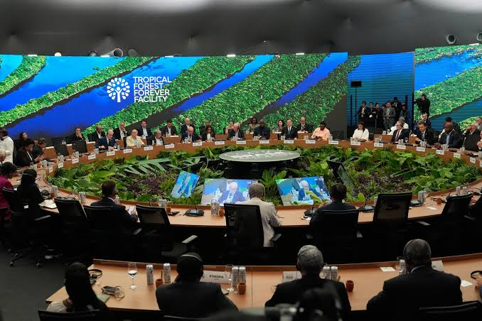

Global Climate Agreements: What Countries Have Promised—and What Progress Means
Climate agreements are designed to help countries coordinate their response to global warming. They matter because greenhouse gas emissions cross national borders: emissions released in one country contribute to a global problem, while the effects can be felt far beyond the place where they originate. But signing an agreement is only the beginning. Its real value depends on national policies, investment, implementation and measurable results.
What is the Paris Agreement?
Adopted on December 12, 2015, at the United Nations climate conference in Paris, the Paris Agreement is an international treaty intended to strengthen the global response to climate change. Its temperature goal is to hold the increase in global average temperature to well below 2°C above pre-industrial levels while pursuing efforts to limit it to 1.5°C.
Under the agreement, countries prepare national climate plans known as nationally determined contributions, or NDCs. These plans describe the actions a country intends to take to reduce emissions and, where relevant, adapt to climate impacts. Countries are expected to submit successive plans every five years, with each new plan representing progress beyond the previous one.
The distinction is important: a national target is a commitment or plan, not proof that the emissions reduction has already happened. To judge progress, readers need to compare targets with reported emissions, enacted policies and independently assessed evidence.
What does climate science tell us?
The Intergovernmental Panel on Climate Change (IPCC), the United Nations body that assesses climate research, concluded in its Sixth Assessment Synthesis Report that human activities have unequivocally caused global warming. Global surface temperature in 2011–2020 was about 1.1°C higher than the 1850–1900 average.
This figure describes the average across the globe over a specified period. It does not mean that every place warmed by exactly 1.1°C, or that every individual year experienced the same conditions. Regional temperatures and local impacts vary. That is why climate assessments use long-term observations and multiple lines of evidence rather than relying on one unusually hot day or a single weather event.
How countries can reduce emissions
Governments can reduce emissions through a combination of measures. These include expanding low-emission electricity, improving energy efficiency, reducing methane leaks, supporting cleaner transport and changing industrial processes. The right combination depends on each country's energy system, resources, infrastructure and development needs.
For example, a country that relies heavily on coal-fired electricity may focus on cleaner power generation, grid upgrades and reliable ways to balance electricity supply. A country with large agricultural emissions may also need policies addressing methane, farming practices and land use. These are different policy challenges, so a single solution cannot be expected to work equally well everywhere.
Governments should also assess practical trade-offs. New energy projects need investment, transmission infrastructure, planning and maintenance. Policies work best when they consider reliability, affordability, workers and communities alongside emissions reductions.
Climate finance: an important test of implementation
Developing countries may need substantial funding to build cleaner energy systems, adapt infrastructure to climate risks and improve resilience. Access to finance matters because a target can be difficult to implement when projects lack affordable capital, technical expertise or suitable infrastructure.
At COP29 in November 2024, countries agreed on a new climate-finance goal that calls for developed countries to take the lead in mobilising at least US$300 billion per year for developing countries by 2035. The decision also calls on all actors to work towards scaling climate finance from public and private sources to US$1.3 trillion per year by 2035.
These figures describe agreed finance goals, not confirmation that the money has already been delivered. Evaluating progress requires looking at the amount actually provided or mobilised, the terms of the funding, who can access it and whether projects produce their intended results. Grants, loans and private investment can have different financial implications for the countries receiving support.
How can readers evaluate a climate announcement?
A headline may describe a new target as a major breakthrough, but readers should look beyond the announcement. The following checks can help distinguish a stated ambition from evidence of implementation:
- Check the original document. Find the official agreement, national climate plan or government announcement rather than relying only on a social media post.
- Look for measurable targets. Check the baseline year, deadline, sectors covered and whether the target concerns emissions reductions, renewable energy, adaptation or finance.
- Compare promises with results. Look for official emissions inventories, progress reports and independent assessments. A pledge alone does not establish success.
- Check the funding details. Identify who is expected to provide the money, when it is due and whether the figure refers to a commitment, an allocation or funds actually delivered.
- Read the date and limitations. Climate negotiations and national plans change over time. Check when a report was published and which countries or emissions it covers.
What the evidence can—and cannot—tell us
Official reports are useful starting points, but their scope matters. For example, the UNFCCC's 2025 synthesis of new national climate plans analysed 64 submissions received between January 2024 and September 2025. Those plans covered about 30% of global emissions in 2019. The UNFCCC cautioned that this limited group was not sufficient for broad conclusions about the entire world.
This illustrates a wider lesson in reading climate news: a report can provide valuable evidence without representing every country. Before generalising a finding, readers should check the sample, period covered, definitions and limitations stated by the original publisher.
Key takeaways
- International agreements provide a framework for cooperation, but domestic policy and implementation determine what happens in practice.
- Climate targets should be assessed against measurable outcomes, not only speeches or announcements.
- Climate finance needs to be evaluated by its delivery, accessibility and impact—not only by the headline figure.
- Reliable climate reporting should identify its original sources, publication dates and evidence limitations.
The most useful way to follow climate negotiations is to compare what governments announce with what official reports later show. This approach gives readers a clearer basis for understanding both progress and the work that remains.
Sources and further reading
- United Nations Framework Convention on Climate Change (UNFCCC): The Paris Agreement
- UNFCCC: Nationally Determined Contributions (NDCs)
- Intergovernmental Panel on Climate Change (IPCC): Sixth Assessment Synthesis Report — Summary for Policymakers
- UNFCCC: COP29 climate-finance agreement, November 24, 2024
- UNFCCC: 2025 NDC Synthesis Report
Editorial note: This article is an original Global Insight editorial summary based on the institutional sources linked above. The UNFCCC and IPCC are credited as sources of evidence; they are not presented as the authors of this article. The article provides general educational information and does not claim to verify an unconfirmed individual summit or treaty announcement.